Der Verlag Niggemann & Simon bietet eine kleine Auswahl von Ansichtskarten mit Motiven aus Maxen und Schmorsdorf an. Die Karten zeigen unter anderem historische Ortsansichten, Erinnerungen an den Finckenfang von 1759, die Maxener Kirche und Zeugnisse der örtlichen Kunst- und Kulturgeschichte.
Die Motive laden dazu ein, die Geschichte und die Besonderheiten der beiden Dörfer zu entdecken – und einen Gruß aus Maxen oder Schmorsdorf zu verschicken.
Preis: 0,50 € je Postkarte
Da nicht alle Motive ständig vorrätig sind, bitten wir Sie, vor einer Bestellung beim Verlag nachzufragen, ob die gewünschte Postkarte noch erhältlich ist.
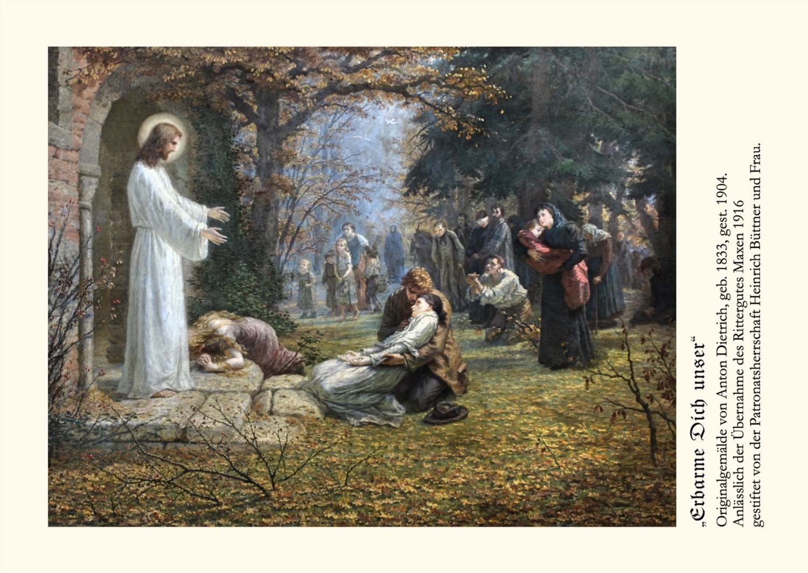
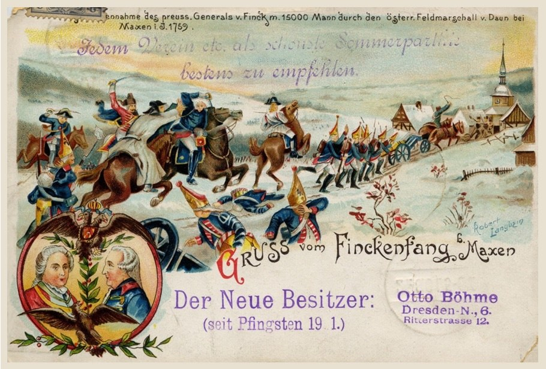
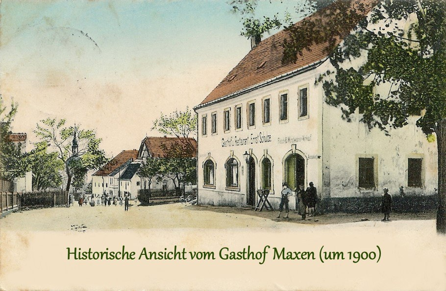
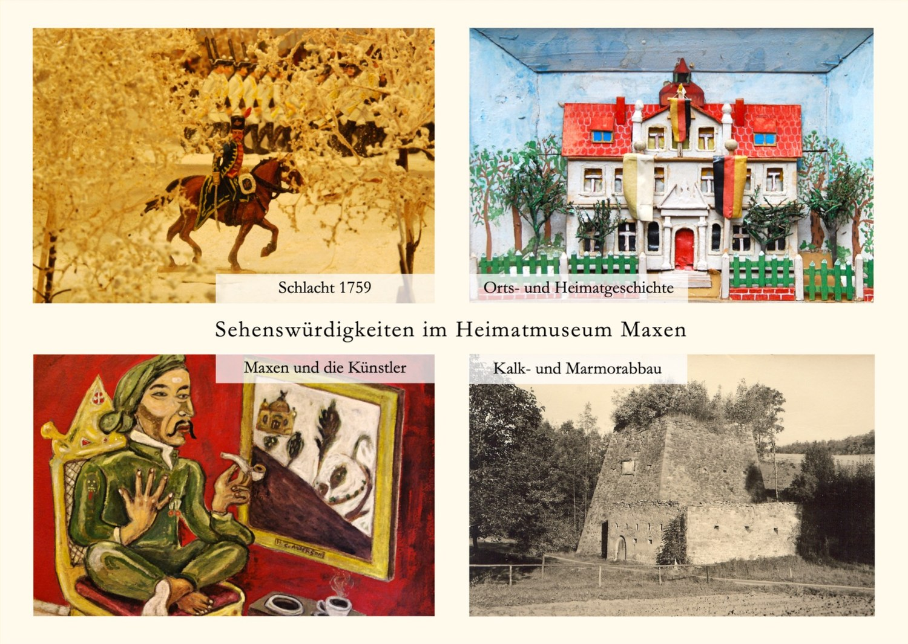
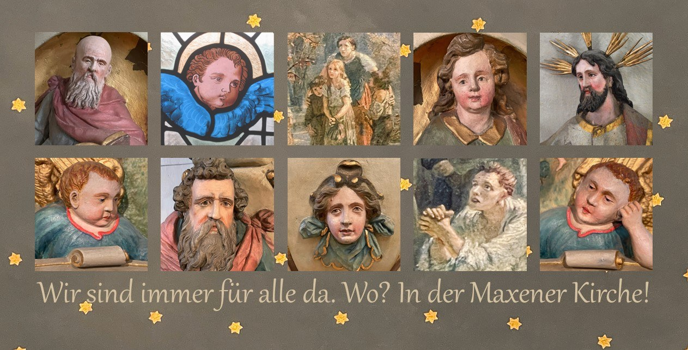
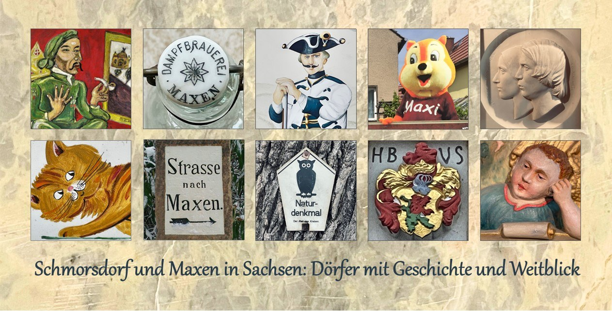
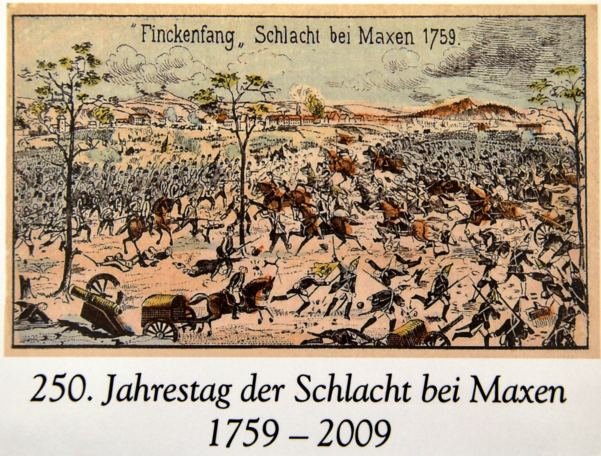
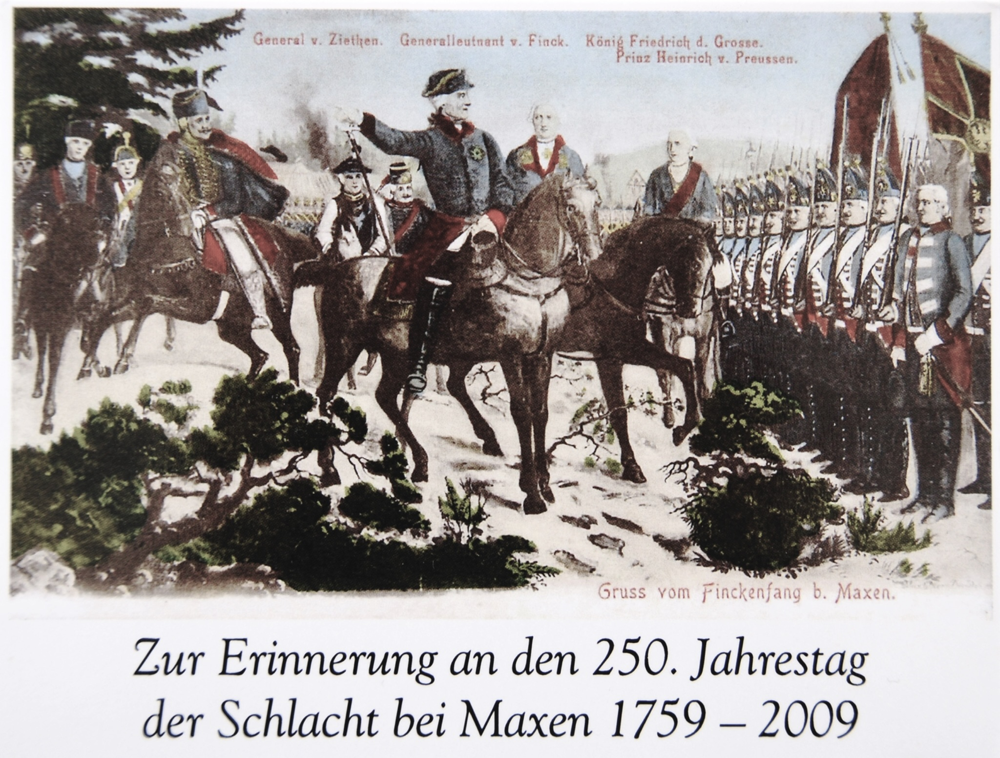
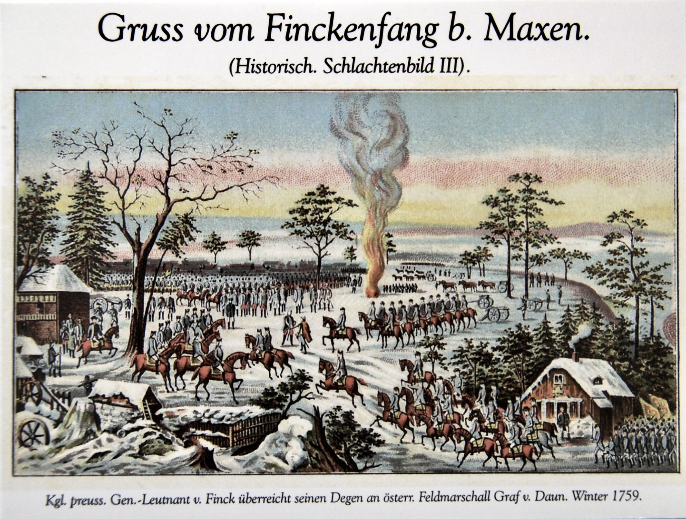
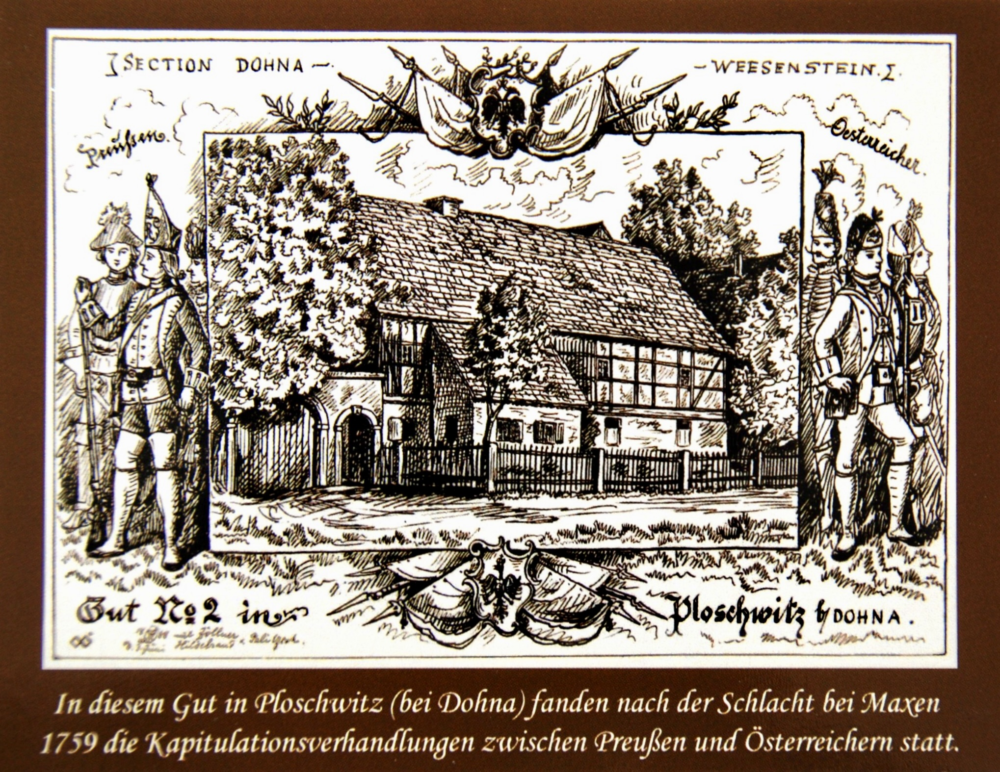
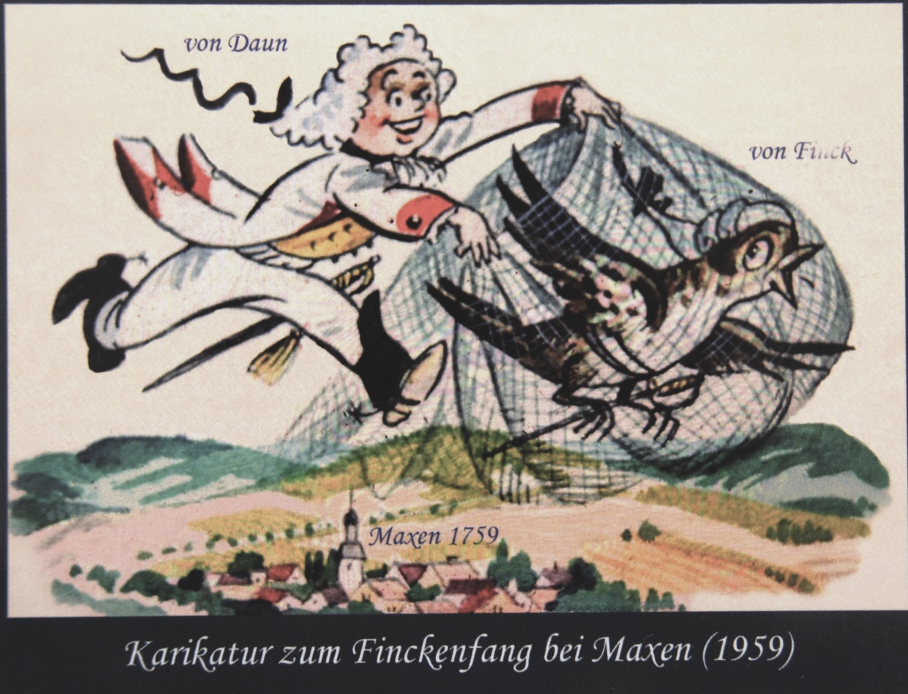